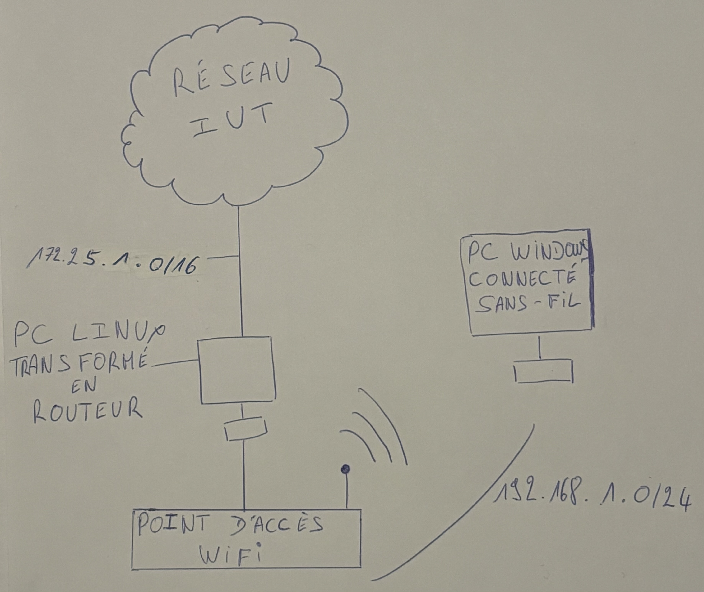

Mes Projets :
Lors de la formation du BUT R&T j’ai pu faire quelques TP depuis ce début d’année et voici certains d’entre eux :
Réseau sans fil : Création d’une interface Wifi pour obtenir une connexion sans fil avec n’importe quel appareil qui pourrait se connecter à internet. Pour se faire il faillait créer un routeur à partir d’un PC Linux afin de pouvoir faire la liaison entre le réseaux filaire et Wifi, puis donc crée un réseaux sans fils et filaire différents. L’expérience à était concluante car la connexion sans fil fonctionnait.
Projet de fin d’année de terminale STI2D : En spécialité SIN à l’approche de la fin de l’année nous avons reçue pour chaque binôme un projet différent dont le plus intéressant était la création de A à Z d’une borne d’accueil pour le côté du pôle technologique du lycée, pour que les personnes venant dans le bâtiment ne le connaissant pas puissent être dirigés par un itinéraire précis tracé sur la borne d’accueil appelé aussi la BA. Lors de ce projet j’ai pue programmer un écran connecté tactile avec une carte Arduino introduit à l’intérieur, faire un site en HTML et CSS pour la partie illustration de l’écran tactile et rendu non énergivore avec une liaison faite à une éolienne placée à l’extérieur du bâtiment.
